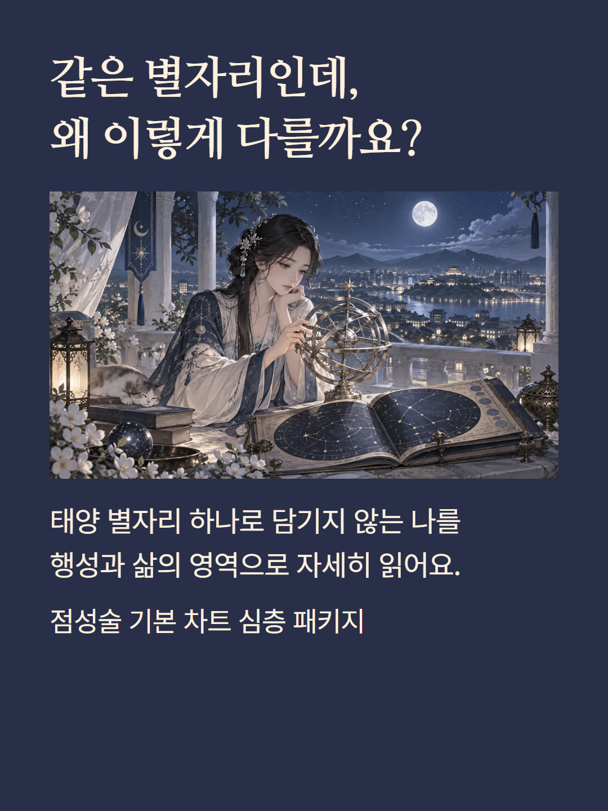
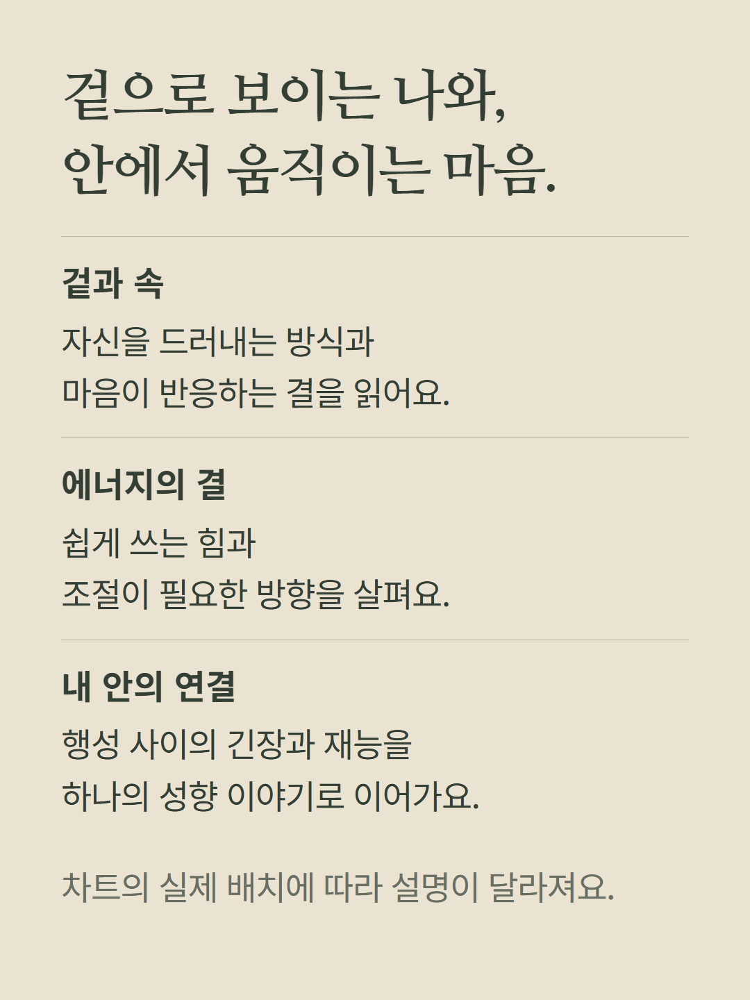
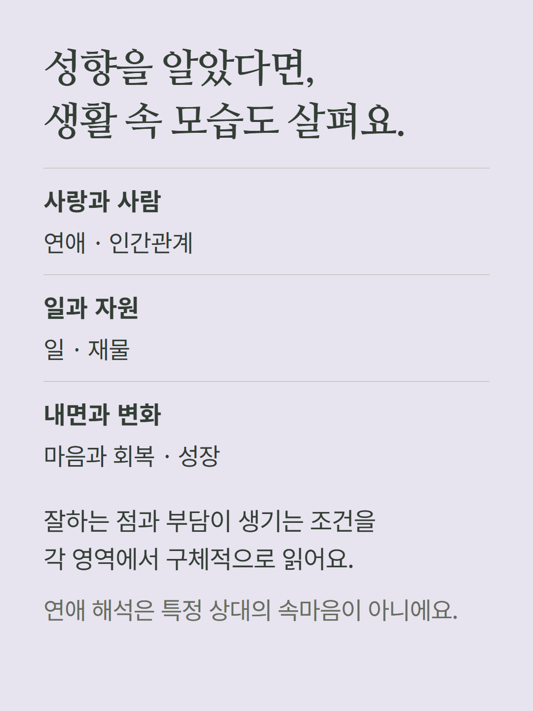
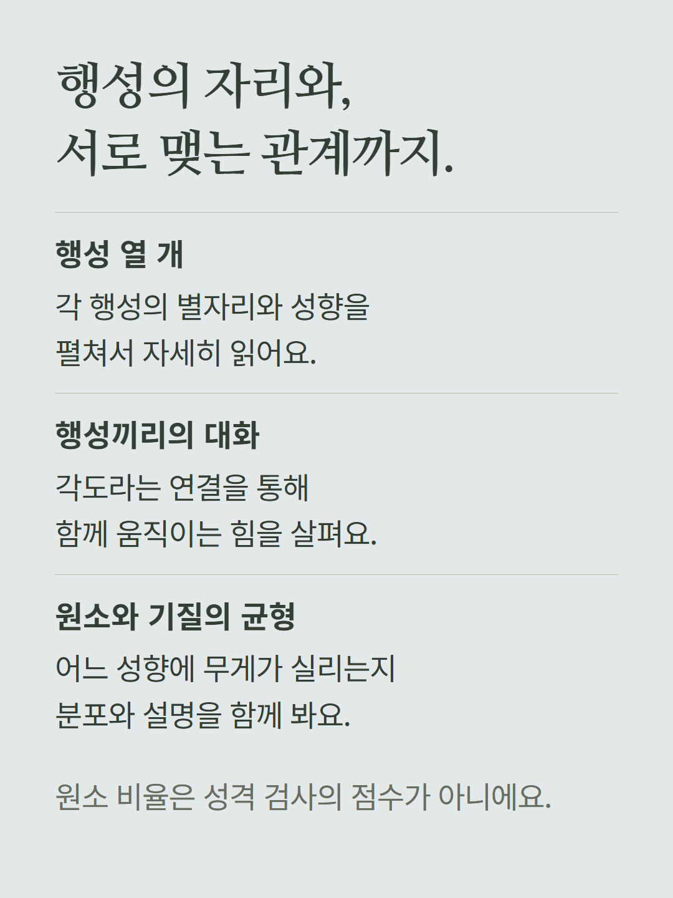
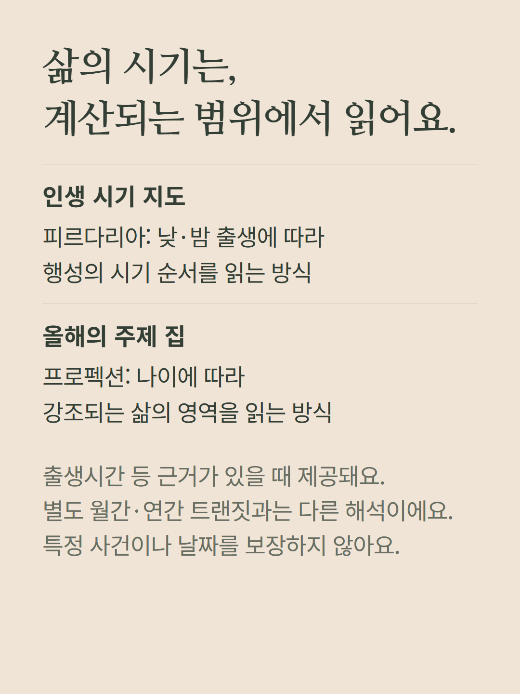
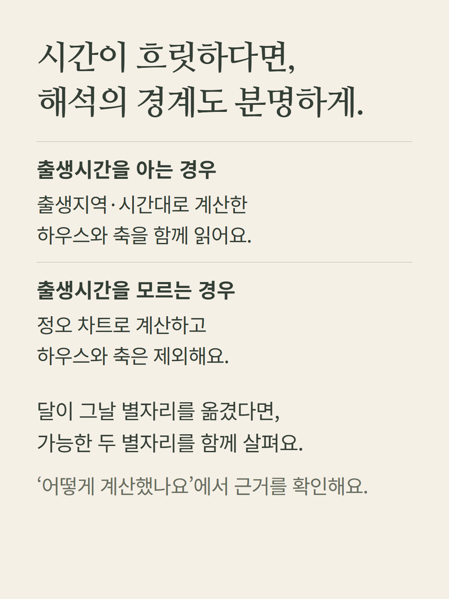
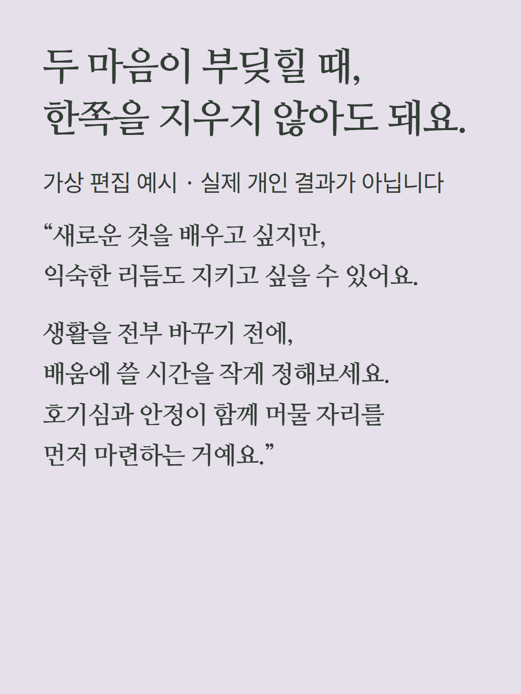
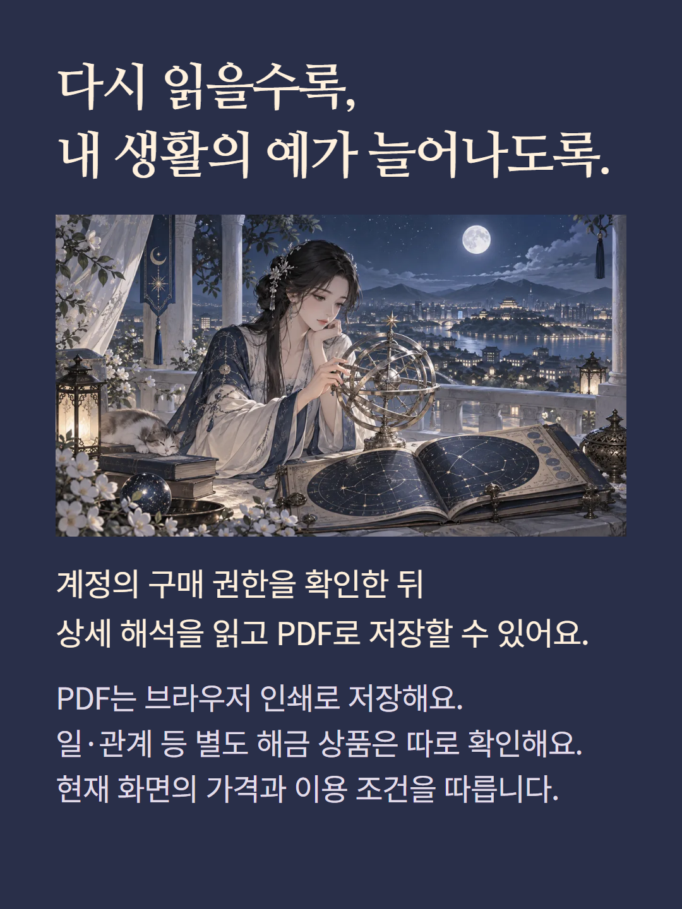

서양 점성술 출생차트의 서버 계산과 준비된 해석 규칙으로 구성하는 상세 해석입니다. 성향 이야기·생활 여섯 영역·행성·각·시기·균형·계산 근거를 읽습니다. 출생시간을 모르면 정오 차트를 사용하며 하우스와 축은 제외합니다. 시기 항목은 실제 계산되는 피르다리아·프로펙션 범위이며 별도 월간·연간 트랜짓 상품과 다릅니다. PDF 저장은 상세 해석 확인 후 브라우저 인쇄 기능으로 제공합니다. 예시는 가상 편집입니다. 가격·이용권·월정석·단건 결제 조건은 기존 화면을 따릅니다.